8. Filtres¶
Dans ce chapitre, nous nous familiarisons avec les filtres numériques en utilisant Python. Nous couvrons les types de filtres (FIR/IIR et passe-bas/passe-haut/passe-bande/coupe-bande), comment les filtres sont représentés numériquement et comment ils sont conçus. Nous terminons par une introduction aux filtres de mise en forme, que nous approfondissons dans le chapitre Pulse Shaping.
Principes de Base des Filtres¶
Les filtres sont utilisés dans de nombreuses disciplines. Par exemple, le traitement des images fait un usage intensif des filtres 2D, où l’entrée et la sortie sont des images. Vous utilisez peut-être un filtre chaque matin pour faire votre café, qui filtre les solides du liquide. En DSP, les filtres sont principalement utilisés pour :
- Séparation des signaux qui ont été combinés (par exemple, extraction du signal souhaité).
- Suppression de l’excès de bruit après la réception d’un signal
- Restauration des signaux qui ont été déformés d’une manière ou d’une autre (par exemple, un égaliseur audio est un filtre).
Il existe certainement d’autres utilisations des filtres, mais ce chapitre a pour but d’introduire le concept plutôt que d’expliquer toutes les façons dont le filtrage peut se produire.
Vous pouvez penser que nous ne nous intéressons qu’aux filtres numériques; ce manuel explore le DSP, après tout. Cependant, il est important de savoir que de nombreux filtres seront analogiques, comme ceux de nos SDR placés avant le convertisseur analogique-numérique (CAN) du côté réception. L’image suivante juxtapose le schéma d’un circuit de filtrage analogique et la représentation sous forme d’organigramme d’un algorithme de filtrage numérique.

En DSP, où l’entrée et la sortie sont des signaux, un filtre a un signal en entrée et un signal en sortie :
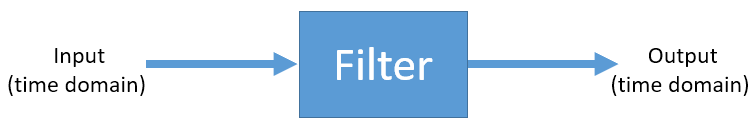{kind=link}
Vous ne pouvez pas introduire deux signaux différents dans un seul filtre sans les additionner au préalable ou effectuer une autre opération. De même, la sortie sera toujours un seul signal, c’est-à-dire un tableau 1D de nombres.
Il existe quatre types de filtres de base :passe-bas, passe-haut, passe-bande et coupe-bande. Chaque type modifie les signaux pour se concentrer sur les différentes plages de fréquences qu’ils contiennent. Les graphiques ci-dessous montrent comment les fréquences des signaux sont filtrées pour chaque type.
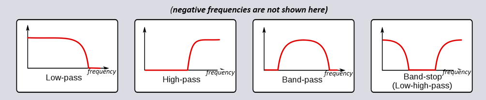{kind=link}
(AJOUTER LE DIAGRAMME MONTRANT LES FRÉQUENCES NÉGATIVES AUSSI)
Chaque filtre permet à certaines fréquences de rester dans un signal tout en bloquant d’autres fréquences. La gamme de fréquences qu’un filtre laisse passer est appelée “bande passante”, et le “bande rejetée” fait référence à ce qui est bloqué. Dans le cas du filtre passe-bas, il laisse passer les basses fréquences et arrête les hautes fréquences, de sorte que 0 Hz sera toujours dans la bande passante. Pour un filtre passe-haut et un filtre passe-bande, 0 Hz sera toujours dans la bande coupée.
Ne confondez pas ces types de filtrage avec la mise en œuvre algorithmique du filtre (par exemple, IIR vs FIR). Le type le plus courant est de loin le filtre passe-bas (LPF pour Low Pass Filter en anglais) car nous représentons souvent des signaux en bande de base. Le LPF nous permet de filtrer tout ce qui se trouve “autour” de notre signal, en éliminant le bruit excessif et les autres signaux.
Représentation des Filtres¶
Pour la plupart des filtres que nous verrons (connus sous le nom de filtres FIR, pour Finite Impulse Response en anglais, ou filtres à réponse impulsionnelle finie en français), nous pouvons représenter le filtre lui-même avec un seul tableau de flottants. Pour les filtres symétriques dans le domaine fréquentiel, ces flottants seront réels (par opposition à complexes), et leur nombre tend à être impair. Nous appelons ce tableau de flottants les coéfficients du filtre ou usuellement taps en anglais. Nous utilisons souvent  comme symbole pour les taps du filtre. Voici un exemple d’un ensemble de taps qui définissent un filtre :
comme symbole pour les taps du filtre. Voici un exemple d’un ensemble de taps qui définissent un filtre :
h = [ 9.92977939e-04 1.08410297e-03 8.51595307e-04 1.64604862e-04
-1.01714338e-03 -2.46268845e-03 -3.58236429e-03 -3.55412543e-03
-1.68583512e-03 2.10562324e-03 6.93100252e-03 1.09302641e-02
1.17766532e-02 7.60955496e-03 -1.90555639e-03 -1.48306750e-02
-2.69313236e-02 -3.25659606e-02 -2.63400086e-02 -5.04184562e-03
3.08099470e-02 7.64264738e-02 1.23536693e-01 1.62377258e-01
1.84320776e-01 1.84320776e-01 1.62377258e-01 1.23536693e-01
7.64264738e-02 3.08099470e-02 -5.04184562e-03 -2.63400086e-02
-3.25659606e-02 -2.69313236e-02 -1.48306750e-02 -1.90555639e-03
7.60955496e-03 1.17766532e-02 1.09302641e-02 6.93100252e-03
2.10562324e-03 -1.68583512e-03 -3.55412543e-03 -3.58236429e-03
-2.46268845e-03 -1.01714338e-03 1.64604862e-04 8.51595307e-04
1.08410297e-03 9.92977939e-04]
Exemple de cas d’utilisation¶
Pour comprendre comment les filtres sont utilisés, prenons un exemple où nous accordons notre radio logicielle sur la fréquence d’un signal existant, et nous voulons l’isoler des autres signaux. Rappelez-vous que nous indiquons à notre SDR la fréquence à laquelle il doit s’accorder, mais que les échantillons capturés par le SDR sont en bande de base, ce qui signifie que le signal s’affichera comme centré autour de 0 Hz. Nous devrons garder la trace de la fréquence sur laquelle nous avons demandé au SDR de s’accorder. Voici ce que nous pourrions recevoir :
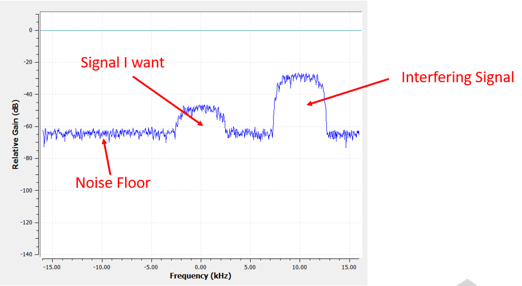{kind=link}
Comme notre signal est déjà centré sur le courant continu DC (0 Hz), nous savons que nous voulons un filtre passe-bas. Nous devons choisir une “fréquence de coupure” (aussi appelée fréquence d’angle), qui déterminera le moment où la bande passante passe en bande rejetée. La fréquence de coupure sera toujours exprimée en Hz. Dans cet exemple, 3 kHz semble être une bonne valeur :

Cependant, dans la plupart des filtres passe-bas, la limite de fréquence négative sera également de -3 kHz. C’est-à-dire qu’elle est symétrique autour du DC (vous verrez plus tard pourquoi). Nos fréquences de coupure ressembleront à ceci (la bande passante est la zone intermédiaire) :

Après avoir créé et appliqué le filtre avec une fréquence de coupure de 3 kHz, nous avons maintenant :

Ce signal filtré peut sembler déroutant jusqu’à ce que vous vous rappeliez que notre plancher de bruit était à la ligne verte autour de -65 dB. Même si nous pouvons toujours voir le signal parasite centré à 10 kHz, nous avons sévèrement diminué la puissance de ce signal. Elle est maintenant inférieure à celle du plancher de bruit! Nous avons également éliminé la plupart du bruit qui existait dans la bande rejetée.
En plus de la fréquence de coupure, l’autre paramètre principal de notre filtre passe-bas est appelé “largeur de transition”. La largeur de transition, également mesurée en Hz, indique au filtre à quelle vitesse il doit passer de la bande passante à la bande rejetée, car une transition instantanée est impossible en pratique.
Visualisons la largeur de transition. Dans le diagramme ci-dessous, la ligne verte représente la réponse idéale pour la transition entre une bande passante et une bande d’arrêt, qui a essentiellement une largeur de transition de zéro. La ligne rouge montre le résultat d’un filtre réaliste, qui présente une certaine ondulation et une certaine largeur de transition.

Vous vous demandez peut-être pourquoi nous n’avons pas simplement défini la largeur de transition la plus petite possible. La raison principale est qu’une largeur de transition plus petite entraîne un plus grand nombre de taps, et plus de taps signifie plus de calculs - nous verrons pourquoi sous peu. Un filtre de 50 taps peut fonctionner toute la journée en utilisant 1% du CPU d’un Raspberry Pi. En revanche, un filtre à 50 000 prises fera exploser votre CPU ! En général, nous utilisons un outil de conception de filtre, puis nous voyons combien de taps il produit, et si c’est beaucoup trop (par exemple, plus de 100), nous augmentons la largeur de transition. Tout dépend de l’application et du matériel qui exécute le filtre, bien sûr.
Dans l’exemple de filtrage ci-dessus, nous avions utilisé une coupure de 3 kHz et une largeur de transition de 1 kHz (il est difficile de voir la largeur de transition en regardant ces captures d’écran). Le filtre résultant a 77 taps.
Revenons à la représentation des filtres. Même si nous pouvons montrer la liste des taps d’un filtre, nous représentons généralement les filtres visuellement dans le domaine fréquentiel. Nous appelons cela la “réponse fréquencielle” du filtre, et elle nous montre le comportement du filtre en fréquence. Voici la réponse en fréquence du filtre que nous venons d’utiliser :
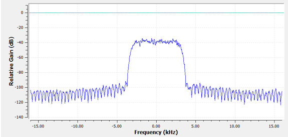{kind=link}
Notez que ce que je montre ici n’est pas un signal - c’est juste la représentation du filtre dans le domaine fréquenciel. Cela peut être un peu difficile à comprendre au début, mais au fur et à mesure des exemples et du code, cela deviendra plus clair.
Un filtre donné a également une représentation dans le domaine temporel; on l’appelle la “réponse impulsionnelle” du filtre car c’est ce que vous voyez dans le domaine temporel si vous prenez une impulsion et la faites passer par le filtre. (Cherche sur Google “fonction delta de Dirac” pour plus d’informations sur ce qu’est une impulsion). Pour un filtre de type FIR, la réponse impulsionnelle est simplement les taps eux-mêmes. Pour le filtre à 77 taps que nous avons utilisé précédemment, les prises sont les suivantes:
h = [-0.00025604525581002235, 0.00013669139298144728, 0.0005385575350373983,
0.0008378280326724052, 0.000906112720258534, 0.0006353431381285191,
-9.884083502996931e-19, -0.0008822851814329624, -0.0017323142383247614,
-0.0021665366366505623, -0.0018335371278226376, -0.0005912294145673513,
0.001349081052467227, 0.0033936649560928345, 0.004703888203948736,
0.004488115198910236, 0.0023609865456819534, -0.0013707970501855016,
-0.00564080523326993, -0.008859002031385899, -0.009428252466022968,
-0.006394983734935522, 4.76480351940553e-18, 0.008114570751786232,
0.015200719237327576, 0.018197273835539818, 0.01482443418353796,
0.004636279307305813, -0.010356673039495945, -0.025791890919208527,
-0.03587324544787407, -0.034922562539577484, -0.019146423786878586,
0.011919975280761719, 0.05478153005242348, 0.10243935883045197,
0.1458890736103058, 0.1762896478176117, 0.18720689415931702,
0.1762896478176117, 0.1458890736103058, 0.10243935883045197,
0.05478153005242348, 0.011919975280761719, -0.019146423786878586,
-0.034922562539577484, -0.03587324544787407, -0.025791890919208527,
-0.010356673039495945, 0.004636279307305813, 0.01482443418353796,
0.018197273835539818, 0.015200719237327576, 0.008114570751786232,
4.76480351940553e-18, -0.006394983734935522, -0.009428252466022968,
-0.008859002031385899, -0.00564080523326993, -0.0013707970501855016,
0.0023609865456819534, 0.004488115198910236, 0.004703888203948736,
0.0033936649560928345, 0.001349081052467227, -0.0005912294145673513,
-0.0018335371278226376, -0.0021665366366505623, -0.0017323142383247614,
-0.0008822851814329624, -9.884083502996931e-19, 0.0006353431381285191,
0.000906112720258534, 0.0008378280326724052, 0.0005385575350373983,
0.00013669139298144728, -0.00025604525581002235]
Et même si nous n’avons pas encore abordé la conception des filtres, voici le code Python qui a généré ce filtre:
import numpy as np
from scipy import signal
import matplotlib.pyplot as plt
num_taps = 51 # Il est utile d'utiliser un nombre impair de robinets.
cut_off = 3000 # Hz
sample_rate = 32000 # Hz
# créer notre filtre passe-bas
h = signal.firwin(num_taps, cut_off, nyq=sample_rate/2)
# tracer la réponse impulsionnelle
plt.plot(h, '.-')
plt.show()
Le simple fait de tracer ce tableau de flottants nous donne la réponse impulsionnelle du filtre:
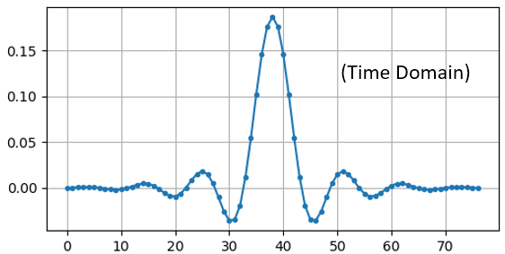{kind=link}
Et voici le code qui a été utilisé pour produire la réponse fréquentielle, présentée plus tôt. C’est un peu plus compliqué car nous devons créer le tableau des fréquences sur l’axe des x.
# tracer la réponse en fréquence
H = np.abs(np.fft.fft(h, 1024)) # prendre la FFT 1024 points et la magnitude
H = np.fft.fftshift(H) # centrer à 0 Hz
w = np.linspace(-sample_rate/2, sample_rate/2, len(H)) # axe des x
plt.plot(w, H, '.-')
plt.show()
Filtres Réels et Complexes¶
Le filtre que je vous ai montré avait des taps réelles, mais les taps peuvent aussi être complexes. Le fait que les taps soient réelles ou complexes ne doit pas nécessairement correspondre au signal que vous faites passer par le filtre, c’est-à-dire que vous pouvez faire passer un signal complexe par un filtre avec des taps réelles et vice versa. Lorsque les taps sont réelles, la réponse en fréquence du filtre sera symétrique autour du DC (0 Hz). En général, nous utilisons des prises complexes lorsque nous avons besoin d’asymétrie, ce qui arrive très rarement.
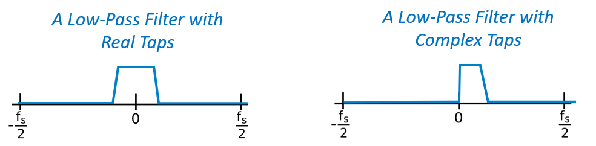{kind=link}
Pour illustrer les prises complexes, revenons au cas d’utilisation du filtrage, sauf que cette fois, nous voulons recevoir l’autre signal parasite (sans avoir à réaccorder la radio). Cela signifie que nous voulons un filtre passe-bande, mais pas un filtre symétrique. Nous voulons seulement garder (c’est-à-dire “passer”) les fréquences entre environ 7 kHz et 13 kHz (nous ne voulons pas passer également de -13 kHz à -7 kHz) :

Une façon de concevoir ce type de filtre est de réaliser un filtre passe-bas avec une coupure de 3 kHz, puis de le décaler en fréquence. Rappelez-vous que nous pouvons décaler la fréquence de x(t) (domaine temporel) en la multipliant par . Dans ce cas, devrait être 10 kHz, ce qui décale notre filtre de 10 kHz. Rappelez-vous que dans notre code Python ci-dessus, était les taps du filtre passe-bas. Afin de créer notre filtre passe-bande, il suffit de multiplier ces prises par , bien que cela implique la création d’un vecteur pour représenter le temps basé sur notre période d’échantillonnage (inverse de la fréquence d’échantillonnage) :
# (h a été trouvé en utilisant le premier extrait de code)
# Décaler le filtre en fréquence en multipliant par exp(j*2*pi*f0*t)
f0 = 10e3 # le montant que nous allons transférer
Ts = 1.0/sample_rate # période de l'échantillon
t = np.arange(0.0, Ts*len(h), Ts) # vecteur temps. les arguments sont (début, fin, pas)
exponential = np.exp(2j*np.pi*f0*t) # il s'agit essentiellement d'une onde sinusoïdale complexe
h_band_pass = h * exponential # faire le décallage
# tracer la réponse impulsionnelle
plt.figure('impulsion')
plt.plot(np.real(h_band_pass), '.-')
plt.plot(np.imag(h_band_pass), '.-')
plt.legend(['reél', 'imag'], loc=1)
# tracer la réponse en fréquence
H = np.abs(np.fft.fft(h_band_pass, 1024)) # prendre la FFT 1024 points et l'amplitude
H = np.fft.fftshift(H) # faire 0 Hz au centre
w = np.linspace(-sample_rate/2, sample_rate/2, len(H)) # axes des x
plt.figure('freq')
plt.plot(w, H, '.-')
plt.xlabel('Fréquence [Hz]')
plt.show()
The plots of the impulse response and frequency response are shown below:
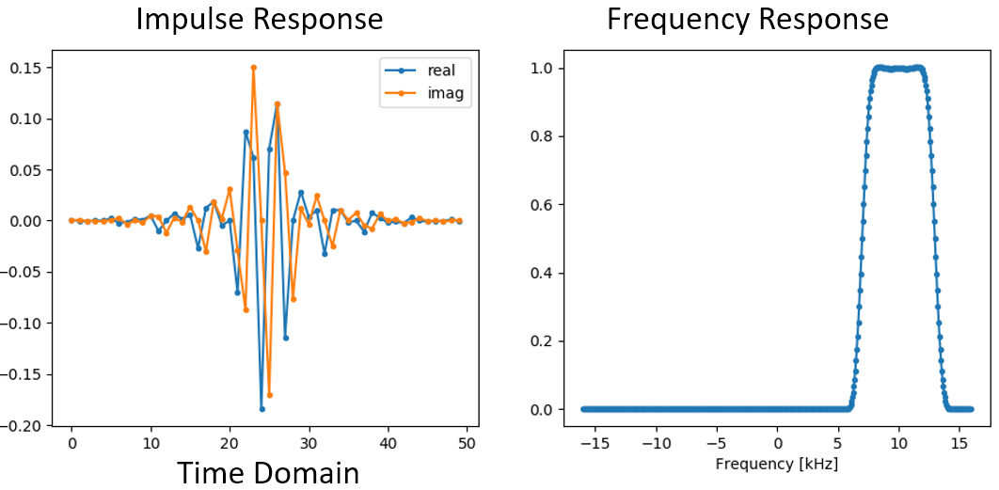{kind=link}
Comme notre filtre n’est pas symétrique autour de 0 Hz, il doit utiliser des taps complexes. Nous avons donc besoin de deux lignes pour tracer ces taps complexes. Ce que nous voyons dans le graphique de gauche ci-dessus est toujours la réponse impulsionnelle. Notre courbe de réponse fréquencielle est ce qui valide réellement le fait que nous avons créé le type de filtre que nous espérions, où il filtrera tout sauf le signal centré autour de 10 kHz. Une fois encore, n’oubliez pas que le tracé ci-dessus n’est pas un signal réel: il s’agit simplement d’une représentation du filtre. Cela peut être très déroutant à comprendre, car lorsque vous appliquez le filtre au signal et que vous tracez la sortie dans le domaine fréquentiel, dans de nombreux cas, elle aura à peu près la même apparence que la réponse en fréquence du filtre lui-même.
Si cette sous-section a ajouté à la confusion, ne vous inquiétez pas, dans 99% des cas, vous aurez affaire à de simples filtres passe-bas avec des taps réelles de toute façon.
Implémentation des Filtres¶
Nous n’allons pas nous plonger trop profondément dans l’implémentation des filtres. Je me concentre plutôt sur la conception des filtres (de toute façon, vous pouvez trouver des implémentations prêtes à l’emploi dans n’importe quel langage de programmation). Pour l’instant, voici ce qu’il faut retenir: pour filtrer un signal avec un filtre FIR, il suffit de convoluer la réponse impulsionnelle (le vecteur de taps) avec le signal d’entrée. (Ne vous inquiétez pas, une section ultérieure explique la convolution.) Dans le monde discret, nous utilisons une convolution discrète (exemple ci-dessous). Les triangles labelisés par des b sont les taps. Dans le schéma, les carrés labelisés au-dessus des triangles signifient qu’il faut retarder d’un pas de temps.

Vous pouvez peut-être comprendre pourquoi nous les appelons maintenant des “taps” (robinet en anglais) de filtre, compte tenu de la façon dont le filtre lui-même est mis en œuvre.
FIR vs IIR¶
Il existe deux grandes classes de filtres numériques: FIR et IIR 1. Réponse impulsionnelle finie (FIR pour Finite Impulse Response en anglais) 2. Réponse impulsionnelle infinie (IIR pour InFinite Impulse Response en anglais)
Nous n’entrerons pas trop dans la théorie, pour l’instant, souvenez-vous que Les filtres FIR sont plus faciles à concevoir et peuvent faire tout ce que vous voulez si vous utilisez suffisamment de taps. Les filtres IIR en revanche sont plus compliqués et peuvent être instables, mais ils sont plus efficaces (ils utilisent moins de CPU et de mémoire pour un filtre donné). Si quelqu’un vous donne une liste de taps, on suppose qu’il s’agit de taps pour un filtre FIR. S’il commence à mentionner des “pôles”, il s’agit de filtres IIR. Nous nous en tiendrons aux filtres FIR dans ce manuel.
Vous trouverez ci-dessous un exemple de réponse fréquencielle, comparant un filtre FIR et un filtre IIR qui effectuent presque exactement le même filtrage; ils ont une largeur de transition similaire qui, comme nous l’avons appris, détermine le nombre de taps nécessaires. Le filtre FIR a 50 prises et le filtre IIR a 12 pôles, ce qui revient à avoir 12 taps en termes de calculs nécessaires.

La leçon à retenir est que le filtre FIR nécessite beaucoup plus de ressources informatiques que le filtre IIR pour effectuer à peu près la même opération de filtrage.
Voici quelques exemples concrets de filtres FIR et IIR que vous avez peut-être déjà utilisés.
Si vous effectuez une “moyenne glissante” sur une liste de nombres, il s’agit simplement d’un filtre FIR avec des taps de 1: - h = [1 1 1 1 1 1 1 1 1 1 1 1] pour un filtre de moyenne glissante avec une taille de fenêtre de 10. Il s’agit également d’un filtre passe-bas, pourquoi? Quelle est la différence entre l’utilisation de 1 et l’utilisation de taps qui diminuent jusqu’à zéro ?
Réponse
Un filtre à moyenne glissante est un filtre passe-bas car il atténue les changements de “haute fréquence”, ce qui est généralement la raison pour laquelle les gens en utilisent un. La raison pour laquelle il faut utiliser des taps qui diminuent jusqu’à zéro aux deux extrémités est d’éviter un changement soudain dans la sortie, comme si le signal filtré était nul pendant un certain temps, puis augmentait soudainement.
Maintenant, un exemple de filtre IIR. L’un d’entre vous a-t-il déjà fait ceci :
x = x*0.99 + nouvelle_valeur*0.01
où les 0,99 et 0,01 représentent la vitesse de mise à jour de la valeur (ou le taux de décroissance, même chose). C’est un moyen pratique de mettre à jour lentement une variable sans avoir à se souvenir des dernières valeurs. Il s’agit en fait d’une forme de filtre IIR passe-bas. Avec un peu de chance, vous avez compris pourquoi les filtres IIR sont moins stables que les filtres FIR: les valeurs ne disparaissent jamais complètement !
Outils de conception de filtres¶
En pratique, la plupart des gens utiliseront un outil de conception de filtre ou une fonction dans le code qui conçoit le filtre. Il existe de nombreux outils différents, mais pour les étudiants, je recommande cette application Web facile à utiliser de Peter Isza qui vous montrera la réponse impulsionnelle et fréquencielle : http://t-filter.engineerjs.com. En utilisant les valeurs par défaut, du moins au moment de l’écriture de ce document, l’application est configurée pour concevoir un filtre passe-bas avec une bande passante de 0 à 400 Hz et une bande rejetée à partir de 500 Hz. La fréquence d’échantillonnage est de 2 kHz, donc la fréquence maximale que nous pouvons “voir” est de 1 kHz.

Cliquez sur le bouton “Design Filter” pour créer les prises et tracer la réponse en fréquence.
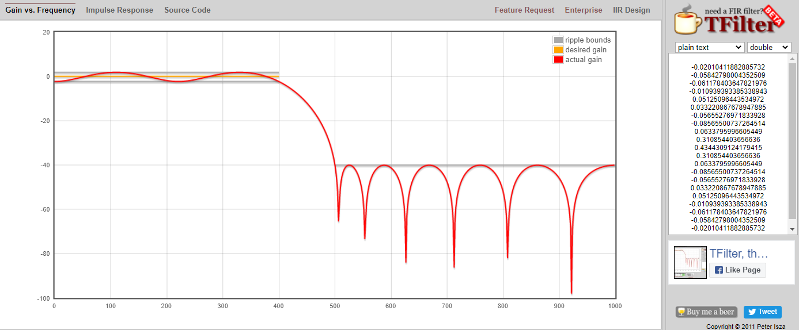{kind=link}
Cliquez sur le texte “Impulse Response” au-dessus du graphique pour voir la réponse impulsionnelle, qui est une courbe des taps puisqu’il s’agit d’un filtre FIR.

Cette application inclut même le code source C++ pour implémenter et utiliser ce filtre. L’application web n’inclut aucun moyen de concevoir des filtres IIR, qui sont en général beaucoup plus difficiles à concevoir.
Convolution¶
Nous allons faire un bref détour pour présenter l’opérateur de convolution. N’hésitez pas à sauter cette section si elle vous est déjà familière.
L’addition de deux signaux est une façon de combiner deux signaux en un seul. Dans le chapitre Het Frequentiedomein, nous avons étudié comment la propriété de linéarité s’applique à l’addition de deux signaux. La convolution est une autre façon de combiner deux signaux en un seul, mais elle est très différente de leur simple addition. La convolution de deux signaux revient à en glisser un sur l’autre et à l’intégrer. Elle est très similaire à une corrélation croisée, si vous êtes familier avec cette opération. En fait, elle est équivalente à une corrélation croisée dans de nombreux cas.
Je pense que l’opération de convolution s’apprend mieux par des exemples. Dans ce premier exemple, nous convoluons deux impulsions carrées ensemble :
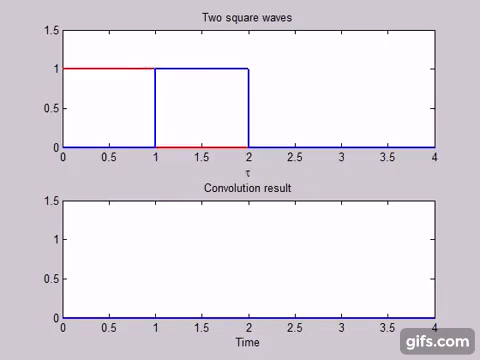{kind=link}
Comme il s’agit simplement d’une intégration glissante, le résultat est un triangle avec un maximum au point où les deux impulsions carrées s’alignent parfaitement. Voyons ce qui se passe si nous convolvons une impulsion carrée avec une impulsion triangulaire :

Dans les deux exemples, nous avons deux signaux d’entrée (un rouge, un bleu), puis la sortie de la convolution est affichée. Vous pouvez voir que la sortie est l’intégration des deux signaux, l’un glissant sur l’autre. En raison de cette nature “glissante”, la longueur de la sortie est en fait plus longue que celle de l’entrée. Si un signal contient M échantillons et l’autre N échantillons, la convolution des deux signaux peut produire N+M-1 échantillons. Cependant, des fonctions telles que numpy.convolve() permettent de spécifier si vous voulez la totalité du résultat (max(M, N) échantillons) ou seulement les échantillons où les signaux se chevauchent complètement (max(M, N) - min(M, N) + 1 si vous êtes curieux). Il n’est pas nécessaire de s’attarder sur ces détails. Sachez simplement que la longueur de la sortie d’une convolution n’est pas seulement la longueur des entrées.
Alors pourquoi la convolution est-elle importante en DSP? Pour commencer, pour filtrer un signal, nous pouvons simplement prendre la réponse impulsionnelle de ce filtre et la convoluer avec le signal. Le filtrage FIR est simplement une opération de convolution.
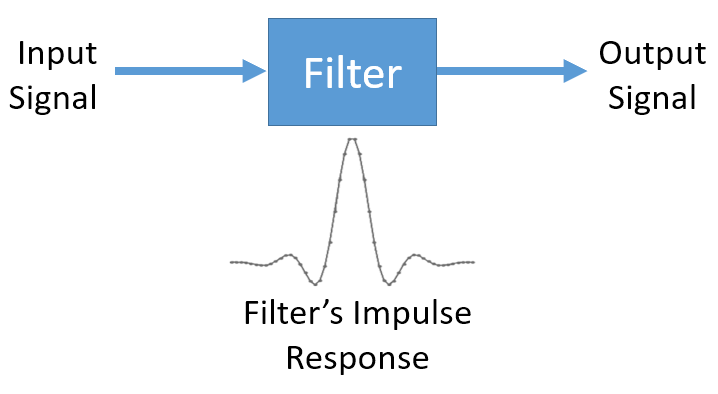{kind=link}
Cela peut prêter à confusion car nous avons mentionné précédemment que la convolution prend deux signaux et en sort un. Nous pouvons traiter la réponse impulsionnelle comme un signal, et la convolution est un opérateur mathématique après tout, qui opère sur deux tableaux 1D. Si l’un de ces tableaux 1D est la réponse impulsionnelle du filtre, l’autre tableau 1D peut être un morceau du signal d’entrée, et la sortie sera une version filtrée de l’entrée.
Voyons un autre exemple. Dans l’exemple ci-dessous, le triangle représente la réponse impulsionnelle de notre filtre, et le signal vert est notre signal filtré.

La sortie rouge est le signal filtré.
Question : Quel type de filtre était le triangle ?
Réponse
Il atténue les composantes haute fréquence du signal vert (c’est-à-dire les transitions nettes du carré) et agit donc comme un filtre passe-bas.
Maintenant que nous commençons à comprendre la convolution, je vais vous présenter son équation mathématique. L’astérisque (*) est généralement utilisé comme symbole de la convolution :
Dans l’expression ci-dessus, est le signal ou l’entrée qui est inversée et glisse sur  , mais et peuvent être intervertis et il s’agit toujours de la même expression. En général, le vecteur le plus court sera utilisé comme . La convolution est égale à une corrélation croisée, définie comme , lorsque est symétrique, c’est-à-dire qu’il ne change pas lorsqu’il est retourné autour de l’origine.
, mais et peuvent être intervertis et il s’agit toujours de la même expression. En général, le vecteur le plus court sera utilisé comme . La convolution est égale à une corrélation croisée, définie comme , lorsque est symétrique, c’est-à-dire qu’il ne change pas lorsqu’il est retourné autour de l’origine.
Conception de Filtres en Python¶
Nous allons maintenant étudier une façon de concevoir nous-mêmes un filtre FIR en Python. Bien qu’il existe de nombreuses approches de la conception de filtres, nous utiliserons la méthode consistant à commencer dans le domaine fréquentiel et à revenir en arrière pour trouver la réponse impulsionnelle. Car en fin de compte, c’est ainsi que notre filtre est représenté (par ses taps).
Vous commencez par créer un vecteur de votre réponse en fréquence souhaitée. Concevons un filtre passe-bas de forme arbitraire illustré ci-dessous:

Le code utilisé pour créer ce filtre est assez simple :
import numpy as np
import matplotlib.pyplot as plt
H = np.hstack((np.zeros(20), np.arange(10)/10, np.zeros(20)))
w = np.linspace(-0.5, 0.5, 50)
plt.plot(w, H, '.-')
plt.show()
hstack() est une façon de concaténer des vecteur en numpy. Nous savons que cela mènera à un filtre avec des taps complexes. Pourquoi ?
Réponse
Il n’est pas symétrique autour de 0 Hz.
Notre objectif final est de trouver les prises de ce filtre afin de pouvoir l’utiliser. Comment obtenir les taps, étant donné la réponse fréquentielle? Eh bien, comment convertir le domaine fréquentiel en domaine temporel? La FFT inverse (IFFT)! Rappelez-vous que la fonction IFFT est presque exactement la même que la fonction FFT. Nous devons également décaler la réponse en fréquence souhaitée avant la IFFT, puis décaler à nouveau la réponse en fréquence après la IFFT (non, elles ne s’annulent pas toutes seules, vous pouvez essayer). Ce processus peut sembler déroutant. Rappelez-vous simplement que vous devez toujours effectuer un FFTshift après un FFT et un IFFshift après un IFFT.
h = np.fft.ifftshift(np.fft.ifft(np.fft.ifftshift(H)))
plt.plot(np.real(h))
plt.plot(np.imag(h))
plt.legend(['réél','imag'], loc=1)
plt.show()
{kind=link}
Nous allons utiliser les taps indiqués ci-dessus comme filtre. Nous savons que la réponse impulsionnelle consiste à tracer les taps, donc ce que nous voyons ci-dessus est notre réponse impulsionnelle. Prenons la FFT de nos taps pour voir à quoi ressemble réellement la réponse fréquentielle. Nous allons faire une FFT de 1 024 points pour obtenir une haute résolution :
H_fft = np.fft.fftshift(np.abs(np.fft.fft(h, 1024)))
plt.plot(H_fft)
plt.show()

Voyez comment la réponse en fréquence n’est pas très droite… elle ne correspond pas très bien à notre forme originale, si vous vous souvenez de la forme pour laquelle nous voulions initialement faire un filtre. Une des raisons principales est que notre réponse impulsionnelle n’a pas fini de décroître, c’est-à-dire que les côtés gauche et droit n’atteignent pas zéro. Nous avons deux options qui lui permettront de décroître jusqu’à zéro :
Option 1: Nous “fenêtrons” notre réponse impulsionnelle actuelle de manière à ce qu’elle décroisse vers 0 des deux côtés. Il s’agit de multiplier notre réponse impulsionnelle par une “fonction de fenêtrage” qui commence et se termine à zéro.
# Après avoir créé h en utilisant le code précédent, créez et appliquez la fenêtre
window = np.hamming(len(h))
h = h * window

Option 2: Nous générons à nouveau notre réponse impulsionnelle en utilisant davantage de points afin qu’elle ait le temps de s’annuler. Nous devons ajouter de la résolution à notre vecteur original dans le domaine des fréquences (appelé interpolation).
H = np.hstack((np.zeros(200), np.arange(100)/100, np.zeros(200)))
w = np.linspace(-0.5, 0.5, 500)
plt.plot(w, H, '.-')
plt.show()
# (le reste du code est le même)

 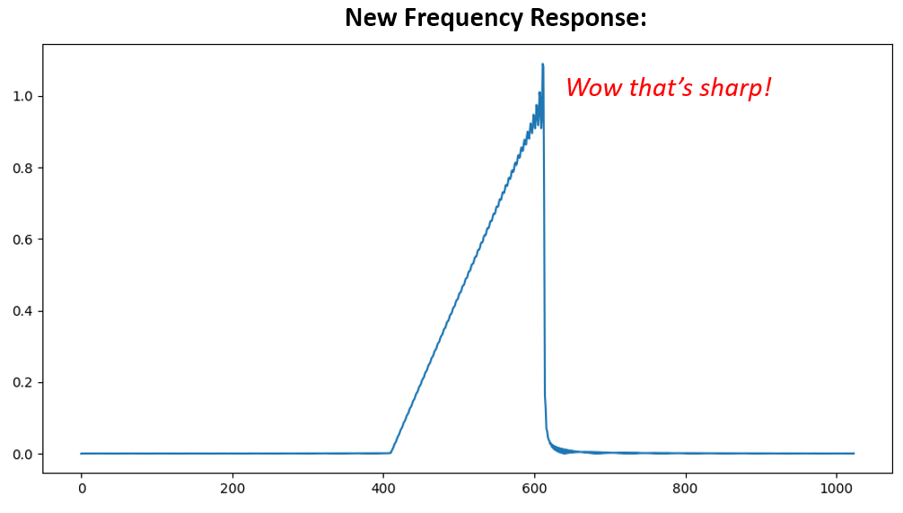
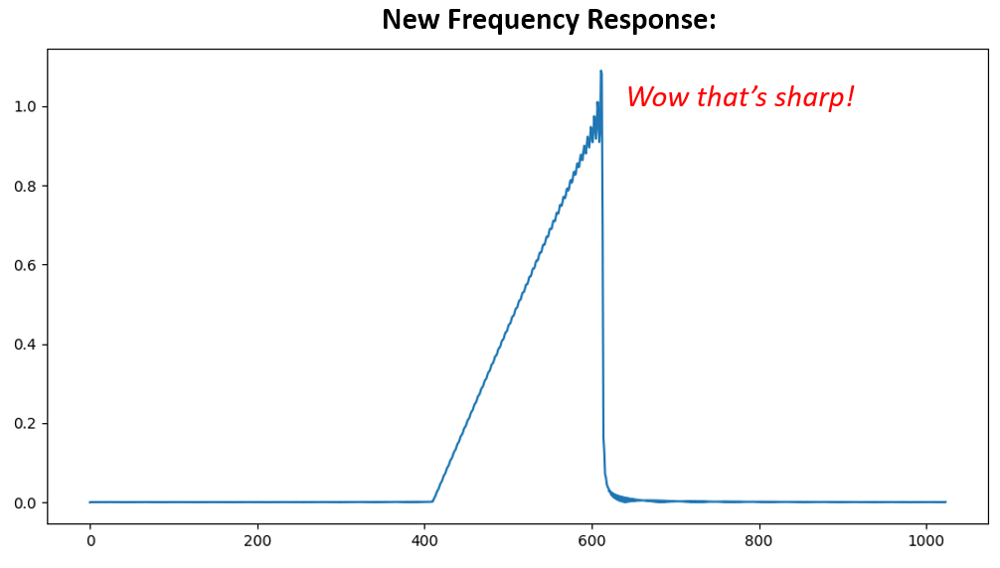
{kind=link}
Les deux options ont fonctionné. Laquelle choisiriez-vous? La deuxième méthode a permis d’obtenir plus de prises, mais la première méthode a permis d’obtenir une réponse en fréquence qui n’était pas très nette et dont le front descendant n’était pas très raide. Il existe de nombreuses façons de concevoir un filtre, chacune ayant ses propres compromis. Beaucoup considèrent la conception de filtres comme un art.
Introduction à la Mise en Forme¶
Nous allons présenter brièvement un sujet très intéressant au sein de la DSP: la mise en forme. Nous l’étudierons plus tard en profondeur dans son propre chapitre, voir Pulse Shaping. Il est intéressant de le mentionner en même temps que le filtrage, car la mise en forme est finalement un type de filtre, utilisé dans un but spécifique, avec des propriétés spéciales.
Comme nous l’avons appris, les signaux numériques utilisent des symboles pour représenter un ou plusieurs bits d’information. Nous utilisons un schéma de modulation numérique tel que ASK, PSK, QAM, FSK, etc., pour moduler une porteuse afin que les informations puissent être envoyées sans fil. Lorsque nous avons simulé la QPSK dans le chapitre Modulation numérique, nous n’avons simulé qu’un seul échantillon par symbole, c’est-à-dire que chaque nombre complexe que nous avons créé était l’un des points de la constellation - c’était un symbole. En pratique, nous générons normalement plusieurs échantillons par symbole, et la raison est liée au filtrage.
Nous utilisons des filtres pour façonner la “forme” de nos symboles car la forme dans le domaine temporel modifie la forme dans le domaine fréquentiel. Le domaine des fréquences nous informe de la quantité de spectre/largeur de bande que notre signal utilisera, et nous voulons généralement la minimiser. Ce qu’il est important de comprendre, c’est que les caractéristiques spectrales (dans le domaine des fréquences) des symboles de la bande de base ne changent pas lorsque nous modulons sur une porteuse; la bande de base est simplement déplacée vers le haut en fréquence alors que sa forme reste la même, ce qui signifie que la quantité de bande passante qu’elle utilise reste la même. Lorsque nous utilisons 1 échantillon par symbole, cela revient à transmettre des impulsions carrées. En fait, la BPSK utilisant 1 échantillon par symbole est juste une onde carrée de 1 et -1 aléatoires :

Et comme nous l’avons appris, les impulsions carrées ne sont pas efficaces car elles utilisent une quantité excessive de spectre:
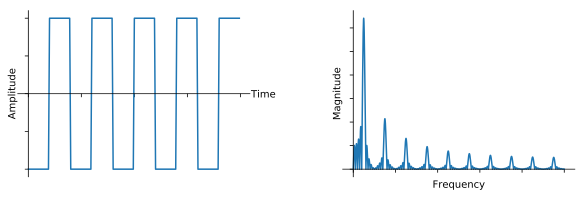Nous procédons donc à une “mise en forme” de ces symboles en forme de blocs afin qu’ils occupent moins de bande passante dans le domaine des fréquences. Pour ce faire, nous utilisons un filtre passe-bas qui élimine les composantes haute fréquence de nos symboles. Vous trouverez ci-dessous un exemple de symboles dans les domaines temporel (en haut) et fréquentiel (en bas), avant et après l’application d’un filtre de mise en forme:
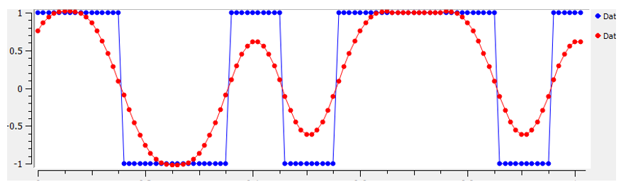{kind=link}
{kind=link}
Notez la rapidité avec laquelle le signal chute en fréquence. Les lobes secondaires sont inférieurs de 30 dB après la mise en forme, soit 1 000 fois moins! Et surtout, le lobe principal est plus étroit, donc moins de spectre est utilisé pour le même nombre de bits par seconde.
Pour l’instant, sachez que les filtres de mise en forme les plus courants sont les suivants :
- Filtre à cosinus surélevé
- Filtre à racines cosinus surélevé
- Filtre Sinc
- Filtre gaussien
Ces filtres ont généralement un paramètre que vous pouvez ajuster pour diminuer la bande passante utilisée. La figure ci-dessous montre le domaine temporel et fréquentiel d’un filtre cosinus surélevé avec différentes valeurs de  , le paramètre qui définit la pente de l’amortissement, souvent appelé roll-off.
, le paramètre qui définit la pente de l’amortissement, souvent appelé roll-off.

Vous pouvez voir qu’une valeur plus faible de réduit le spectre utilisé (pour la même quantité de données). Cependant, si la valeur est trop faible, les symboles du domaine temporel mettent plus de temps à revenir à zéro. En fait, lorsque  , les symboles ne tombent jamais complètement à zéro, ce qui signifie que nous ne pouvons pas transmettre ces symboles dans la pratique. Une valeur de autour de 0,35 est courante.
, les symboles ne tombent jamais complètement à zéro, ce qui signifie que nous ne pouvons pas transmettre ces symboles dans la pratique. Une valeur de autour de 0,35 est courante.
Vous en apprendrez beaucoup plus sur la mise en forme, y compris certaines propriétés spéciales que les filtres de mise en forme doivent satisfaire, dans le chapitre Pulse Shaping.